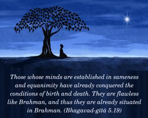
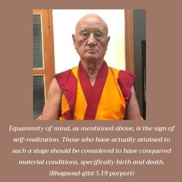
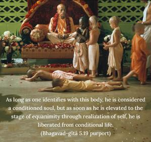
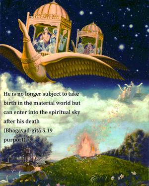
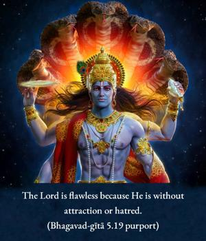
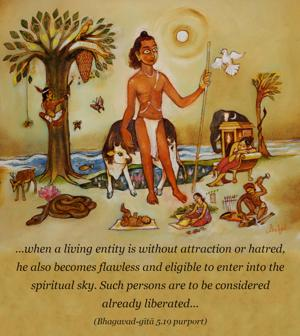

Those whose minds are established in sameness and equanimity have already conquered the conditions of birth and death. They are flawless like Brahman, and thus they are already situated in Brahman.






Equanimity of mind, as mentioned above, is the sign of self-realization. Those who have actually attained to such a stage should be considered to have conquered material conditions, specifically birth and death. As long as one identifies with this body, he is considered a conditioned soul, but as soon as he is elevated to the stage of equanimity through realization of self, he is liberated from conditional life. In other words, he is no longer subject to take birth in the material world but can enter into the spiritual sky after his death. The Lord is flawless because He is without attraction or hatred. Similarly, when a living entity is without attraction or hatred, he also becomes flawless and eligible to enter into the spiritual sky. Such persons are to be considered already liberated, and their symptoms are described below.